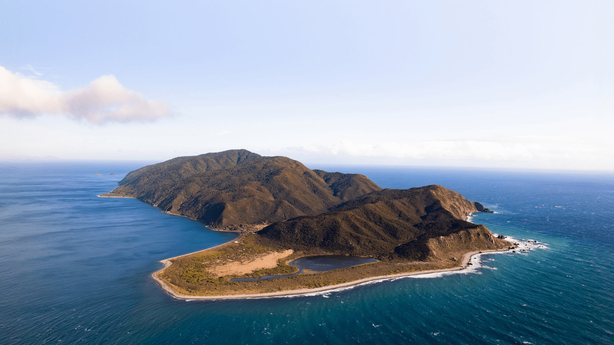

Kapiti Island
A Sanctuary for Rare Birds
Kapiti Island, located just 5 kilometers off the Kapiti Coast, is one of New Zealand's most significant and accessible nature reserves, specifically designated as a predator-free island bird sanctuary. Its protected status means it serves as a critical stronghold for many of New Zealand's rarest and most endangered native bird species, providing them a safe haven from introduced predators like stoats, rats, and possums.
The island was declared a nature reserve in 1897, making it one of the country's oldest and most successful conservation efforts. Over the decades, intensive conservation work has transformed it into a vibrant ecosystem where native flora and fauna can thrive undisturbed.
Visitor Access and Guaranteed Encounters
While relatively accessible, visitor numbers to Kapiti Island are strictly controlled to protect its delicate environment. Access is granted only via approved tour operators, who manage daily permits and ensure strict biosecurity protocols are followed. This ensures no pests are inadvertently introduced to the island, safeguarding its precious bird populations.
For those fortunate enough to visit, the experience is truly unique. You have an almost guaranteed chance to encounter wild, endemic birds up close, many of which are rarely seen on the mainland:
- Kākā (bush parrot): Known for their playful nature and distinctive squawks, often seen flying overhead or foraging in trees.
- Takahē: A critically endangered, flightless bird, once thought extinct, now thriving on Kapiti Island. Spotting one of these large, colourful birds is a true highlight.
- Kōkako: Famous for its hauntingly beautiful song and distinctive blue wattles, these birds are frequently heard and often seen among the forest canopy.
- Little Spotted Kiwi: While nocturnal and elusive, Kapiti Island holds the largest wild population of this kiwi species. Night tours offer a chance to hear or even spot one.
Walking Tracks and Island Experience
The island features two primary walking tracks. The main track leads to the **summit of Tuteremoana (521m)**, offering spectacular panoramic views of the Kapiti Coast, the Marlborough Sounds, and even Mount Ruapehu on a clear day. This track provides excellent opportunities for bird watching amidst regenerating native bush.
One of the island's tracks is typically closed for half the year to protect sensitive nesting birds, highlighting the Department of Conservation's commitment to prioritizing the wildlife's needs. A visit to Kapiti Island offers not just a glimpse into New Zealand's natural heritage, but also a deep appreciation for the country's dedicated conservation efforts.